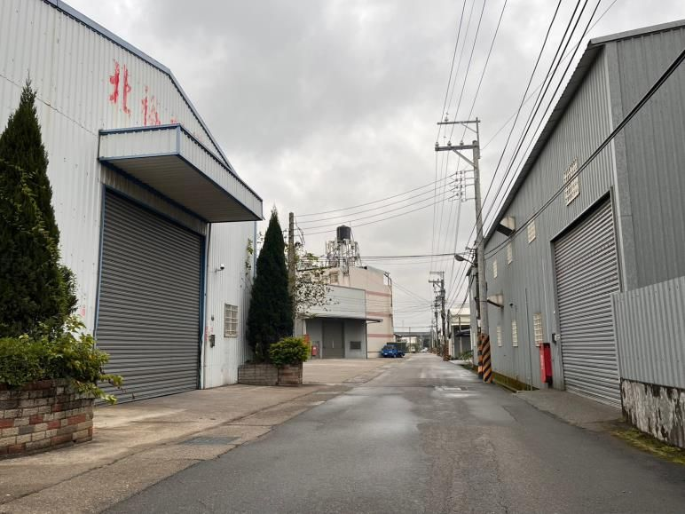
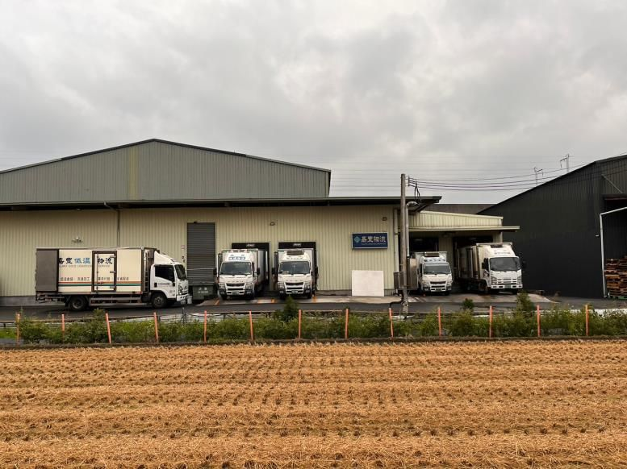
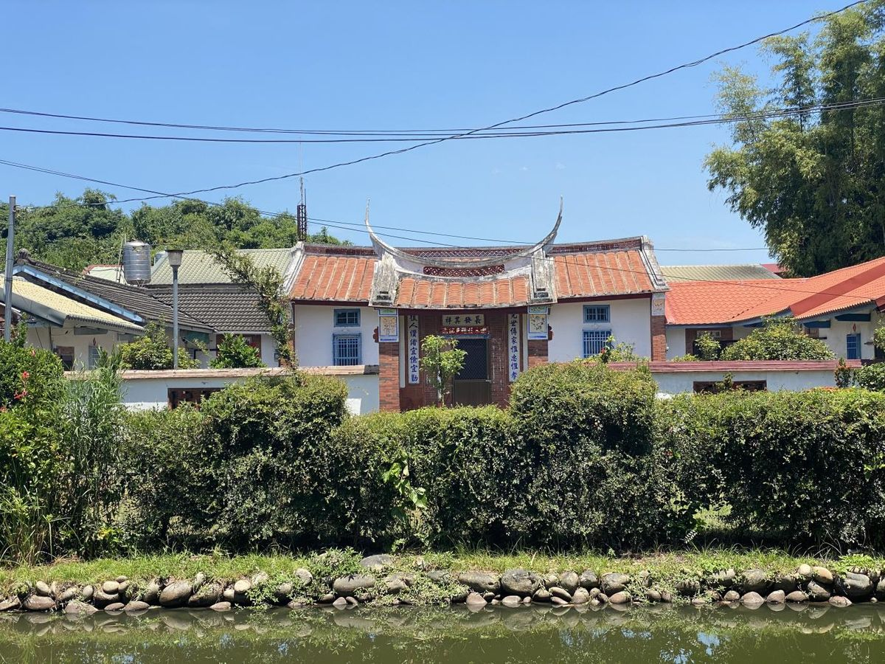

2022.12・說明會閱讀主題
農地非農用：中科特定區農業區
以中科特定區農業區內 655.64 公頃為研究範圍，用 107 年全國國土利用調查盤點使用現況：水田仍是最大宗，但製造業與倉儲已佔到 17%，越靠近中科路北側，工廠越密集。
水田 30.74%製造業 13.49%旱田 11.65%純住宅 10.46%道路 7.58%果園 4.21%商業 3.83%倉儲 3.55%其他 14.49%
655.64研究範圍（公頃）
23.36%中科路以北製造業比例，為該區最大宗
3.24%中科路以南倉儲比例
討論的解方：《工廠管理輔導法》未登記工廠納管流程
符合納管條件→111.03.19 前提出改善計畫→兩年內完成改善→繳農變金・特定工廠登記→分區變更（非都：特目／都內：特工專區）